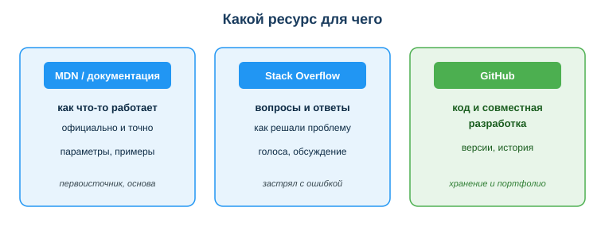
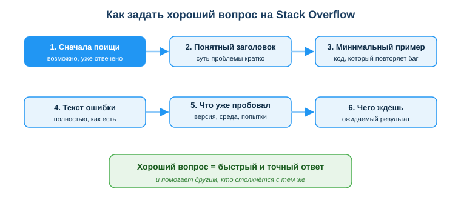

Пользоваться проф. справочными ресурсами (документация, Stack Overflow, MDN, GitHub)
Расширенный учебный материал по теме
Дисциплина: Применение информационно-коммуникационных и цифровых технологий
Результат обучения: РО 2.2 — использование услуг веб-порталов и цифровых сервисов Объём темы: 2 часа
Квалификация: 4S06130103 «Разработчик программного обеспечения»
Это расширенный разбор темы для самостоятельного изучения. Он подробнее, чем конспект урока: здесь каждый ресурс разобран глубже — что это, для чего, как им пользоваться правильно, где границы доверия. Читай его как «учебник по теме»: после него ты не просто будешь знать названия трёх сайтов, а сможешь быстро находить ответы, отличать надёжное от устаревшего и работать так, как работают профессионалы.
1. Введение: зачем тебе эта тема
Представь обычный рабочий момент. Ты пишешь код, запускаешь — и программа падает. На экране красная простыня текста: TypeError, имя файла, номер строки, слова, половину из которых ты видишь впервые. Преподавателя рядом нет, а если и есть — ждать ответа долго. Угадывать наугад, меняя строчки «вдруг заработает», можно час и без результата. Что делает в этот момент опытный разработчик? Он не паникует и не пытается вспомнить всё наизусть. Он знает главное — где искать ответ.
И вот тут начинается профессия. Секрет хорошего разработчика не в том, что он держит в голове все функции всех библиотек. Это невозможно: только в стандартной библиотеке Python сотни функций, в вебе — тысячи свойств CSS и методов JavaScript, и всё это ещё и меняется от версии к версии. Профессионала отличает другое: он быстро находит нужное и понимает, чему можно доверять, а чему нет. Этот навык экономит часы каждый рабочий день и спасает от ошибок, которые тянутся из устаревших советов и непроверенного чужого кода.
У этого навыка есть три главные опоры, и вся тема — про них:
- официальная документация (для веба — MDN, для Python — docs.python.org) объясняет, как что-то работает официально и точно;
- Stack Overflow — площадка вопросов и ответов, где сообщество разбирает как решали конкретную проблему;
- GitHub — место, где хранится код, его история и где идёт совместная разработка.
Эта тема важна для тебя не «вообще», а буквально каждый день будущей работы. На реальной работе ты будешь ежедневно читать документацию, искать решения на Stack Overflow и хранить код на GitHub. Более того: твой профиль на GitHub — это твоё портфолио, по которому тебя оценит работодатель ещё до собеседования. Эти три ресурса сопровождают разработчика всю карьеру — от первой учебной задачи до работы в большой команде. Научиться выбирать нужный ресурс и грамотно им пользоваться — такой же профессиональный навык, как умение писать код. И освоить его проще, чем кажется: нужно понять логику каждого ресурса и несколько правил, как ими пользоваться с умом.
2. Что ты узнаешь и чему научишься
После изучения темы ты сможешь:
- выбирать правильный ресурс под конкретную задачу (документация / Stack Overflow / GitHub);
- грамотно искать ответ и оценивать его достоверность по дате, рейтингу и версии;
- задавать хороший вопрос на Stack Overflow, на который тебе действительно ответят;
- ориентироваться в GitHub: понимать репозиторий, историю версий, совместную работу и роль профиля как портфолио;
- выстраивать иерархию источников — понимать, почему официальная документация надёжнее форума;
- использовать чужой код этично и законно: проверять лицензию, понимать, что можно копировать, а что нельзя.
3. Ключевые понятия
- Профессиональные ресурсы разработчика — проверенные источники знаний и инструментов: документация (как работает), Q&A-площадки (как решить проблему), платформы хранения кода (где живёт код) [1].
- Официальная документация — описание языка или библиотеки, написанное и проверенное их разработчиками; первоисточник истины [8; 11].
- Stack Overflow — крупнейшая в мире площадка вопросов и ответов для программистов, где лучшие ответы поднимаются голосами сообщества [9].
- GitHub — платформа для хранения кода на основе системы контроля версий git: репозитории, история изменений, инструменты совместной работы [10].
- Репозиторий — «папка проекта» на GitHub вместе со всей историей его изменений.
- Open source (открытый код) — программы, исходный код которых открыт для просмотра и использования на условиях лицензии.
- Лицензия на код — документ, который определяет, что можно и чего нельзя делать с чужим кодом.
- Иерархия источников — порядок доверия: официальная документация выше форума, форум выше случайного блога.
4. Подробная теория
4.1. Три опоры разработчика: одна задача — один ресурс
Главная мысль темы простая: у каждого ресурса своя задача, и путать их неэффективно. Документация объясняет, как что-то работает. Stack Overflow подсказывает решение конкретной проблемы. GitHub хранит и развивает код. Если ты пойдёшь не туда, ты либо потеряешь время, либо получишь ненадёжный ответ.
Посмотри на схему «Какой ресурс для чего» (приложение А). Она делит твою работу на три колонки, и каждая отвечает на свой вопрос:

| Ресурс | Для чего | Когда идти |
|---|
| Документация (MDN, docs.python.org) | как что-то работает официально и точно | первоисточник, основа |
| Stack Overflow | как другие решали конкретную проблему | застрял с ошибкой |
| GitHub | хранение кода, версии, командная работа | свой и чужой код |
Удобная аналогия — три разных места, куда ты идёшь с разными вопросами. Документация — это инструкция к прибору от завода-изготовителя: точно, официально, но сухо. Stack Overflow — это форум владельцев этого прибора, где люди делятся: «у меня была такая же поломка, вот что помогло». GitHub — это гараж и склад, где сам прибор хранится, ремонтируется и где видно всю историю его починок. Заметь: на форуме не публикуют официальную инструкцию, а на складе не разбирают чужие поломки. Так же и здесь — у каждого ресурса своя роль.
Чтобы закрепить, ответь себе на три вопроса по схеме:
- к какому ресурсу пойти, чтобы узнать, какие параметры принимает функция? (документация — это её прямое назначение);
- где искать, если ты застрял с конкретной ошибкой и хочешь увидеть чужое решение? (Stack Overflow — там сообщество разбирает ошибки);
- какой ресурс отвечает за хранение кода, версии и совместную работу? (GitHub).
Дальше разберём каждую опору подробно.
4.2. Документация — первоисточник, с которого начинают
Официальная документация — это описание языка программирования или библиотеки, написанное теми, кто их создаёт. Для веб-технологий (HTML, CSS, JavaScript) главный ресурс — MDN Web Docs (developer.mozilla.org), его поддерживает Mozilla вместе с сообществом [8; 11]. Для Python — docs.python.org, официальный сайт языка [3]. У каждой популярной библиотеки тоже есть своя документация: у pandas — pandas.pydata.org, у NumPy — numpy.org.
Почему именно с документации начинают. Потому что это первоисточник истины. Её пишут и проверяют разработчики самого языка или библиотеки — те, кто лучше всех знает, как оно устроено. В документации описано точно: как работает функция, какие параметры она принимает, что возвращает, какие бывают подводные камни, и почти всегда есть рабочие примеры. Когда у тебя есть выбор «прочитать в документации» или «спросить на форуме», правильный первый шаг почти всегда — документация.
Что обычно есть на странице функции в документации. Возьмём для примера строковый метод в Python или метод массива в JavaScript. Типичная страница документации содержит:
- сигнатуру — имя функции и её параметры, например
list.sort(key=None, reverse=False). Сразу видно, какие аргументы есть и какие у них значения по умолчанию;
- описание — что функция делает простыми словами;
- параметры — что означает каждый аргумент и какого он типа;
- возвращаемое значение — что ты получишь на выходе;
- примеры кода — короткие рабочие фрагменты, которые можно скопировать и попробовать;
- примечания о версиях — с какой версии появилась функция (важно: на старом окружении её может не быть);
- «см. также» — ссылки на связанные функции.
Как читать документацию MDN — практический приём. На MDN у страниц веб-технологий есть полезные блоки, которые экономят время:
- блок Syntax — как писать;
- блок Examples — живые примеры, часто прямо в интерактивном виде;
- таблица Browser compatibility («совместимость с браузерами») — показывает, в каких браузерах и с какой версии свойство работает. Это критично для веба: красивое CSS-свойство может не работать в старом браузере, и таблица совместимости предупредит тебя заранее.
Маленький, но важный навык — искать в документации, а не в общем поиске. Часто быстрее набрать в поисковике запрос вида mdn array map или python list sort, чем листать сайт вручную — поисковик выведет прямо нужную страницу официальной документации. Приём «название_ресурса + что ищу» работает почти всегда.
Запомни принцип: документация говорит, как должно быть. Если форум советует одно, а документация — другое, прав, как правило, первоисточник. Документация — это фундамент; всё остальное надстраивается над ней.
4.3. Stack Overflow — опыт сообщества и как им пользоваться с головой
Stack Overflow (stackoverflow.com) — крупнейшая в мире площадка вопросов и ответов (Q&A) для программистов [9]. Логика простая: один человек задаёт вопрос с описанием проблемы, другие предлагают ответы, а сообщество голосует — поднимает вверх лучшие ответы и опускает слабые. У вопроса может быть принятый ответ (его отметил автор вопроса галочкой) и несколько других. Часто самый полезный ответ — не обязательно принятый: смотри и на тот, у которого больше всего голосов.
Польза огромна: почти любую типичную ошибку до тебя уже кто-то получал и разбирал. Но именно из-за этой массовости пользоваться Stack Overflow нужно с головой — иначе легко взять устаревший или неподходящий совет.
На что смотреть в ответе, прежде чем ему доверять:
- Дата. Программирование меняется быстро. Ответ 2013 года мог быть верным тогда, но устареть: функцию переименовали, подход признали небезопасным, библиотека вышла в новой версии. Свежий ответ почти всегда надёжнее старого.
- Число голосов (рейтинг). Много голосов — сигнал, что многим людям ответ помог. Но голоса копятся годами, поэтому смотри их вместе с датой: старый ответ мог набрать голоса давно и с тех пор устареть.
- Версия языка или библиотеки. Проверь, что ответ написан для твоей версии. Код для Python 2 часто не работает в Python 3; решение для старой версии библиотеки может не подойти к новой.
- Комментарии под ответом. Часто именно там пишут: «это уже не работает», «есть способ лучше», «осторожно, тут утечка памяти». Не поленись их прочитать.
- Понимание. Прежде чем копировать код, пойми, что он делает. Если не понимаешь — ты не сможешь его починить, когда он сломается, и не заметишь, если он делает что-то опасное.
Мини-кейс из урока, разобранный. Студент скопировал ответ с 2 голосами от 2013 года — код не сработал. А рядом был ответ 2024 года с 300 голосами, который учитывал новую версию библиотеки. Ошибка студента — он взял первый попавшийся ответ, не посмотрев ни дату, ни рейтинг. Правильный ход: выбрать свежий ответ с высоким рейтингом и сверить его с официальной документацией. Это и есть «с головой».
Как задать хороший вопрос на Stack Overflow
Может случиться, что нужного ответа нет — тогда ты задаёшь вопрос сам. И здесь действует правило: хороший вопрос = быстрый и точный ответ. Плохо заданный вопрос либо проигнорируют, либо закроют, либо ответят не по делу. Посмотри на схему «Как задать хороший вопрос на Stack Overflow» (приложение Б) — она показывает шаги по порядку.

- Сначала поищи. Очень вероятно, что твою проблему уже разбирали. Поиск по тексту ошибки часто сразу выводит готовый ответ. Дублирующие вопросы на Stack Overflow закрывают, поэтому поиск — обязательный первый шаг.
- Понятный заголовок. Заголовок должен коротко передавать суть. Плохо: «Помогите, не работает!!!». Хорошо: «Python: TypeError при сложении строки и числа в цикле». По такому заголовку человек сразу поймёт, может ли он помочь.
- Минимальный пример кода. Приведи короткий кусок кода, который воспроизводит проблему — без лишнего, но достаточный, чтобы баг повторился. Это называется минимальный воспроизводимый пример. Не вываливай весь проект на 500 строк: никто не будет в нём копаться.
- Полный текст ошибки. Скопируй сообщение об ошибке целиком, как есть, а не «там какая-то ошибка про тип». В тексте ошибки часто и кроется ответ.
- Что уже пробовал. Опиши версию языка/библиотеки, среду и свои попытки. Это показывает, что ты не ждёшь, что за тебя сделают всё, и помогает не предлагать тебе то, что ты уже проверил.
- Чего ждёшь. Сформулируй ожидаемый результат: «должно вывести сумму, а выводит ошибку». Так отвечающий поймёт, к чему ты стремишься.
Заметь приятный побочный эффект: хорошо заданный вопрос помогает не только тебе. Он остаётся в базе, и следующий человек с такой же проблемой найдёт готовый разбор. Так и устроено сообщество — каждый вопрос и ответ работает на всех.
Важная связь с предыдущими темами. Прежде чем отдавать свой код в публичный вопрос, проверь, что в нём нет персональных данных, паролей и ключей доступа. Stack Overflow — публичная площадка; всё, что ты туда выложил, видит весь интернет. Используй обезличенные или выдуманные тестовые данные. Это тот же принцип ответственной работы, что и при общении с ИИ-ассистентами.
4.4. GitHub — дом твоего кода и твоё портфолио
GitHub (github.com) — платформа для хранения кода, построенная на системе контроля версий git [10]. Если документация объясняет, а Stack Overflow подсказывает, то GitHub — это место, где код живёт: хранится, меняется по версиям и развивается силами команды.
Что такое репозиторий. Репозиторий (коротко «репо») — это «папка проекта» вместе со всей историей его изменений. В нём лежат файлы кода, обычно файл README (описание проекта), и хранится журнал: кто, когда и что изменил. Благодаря этому ты можешь вернуться к любой прошлой версии, увидеть, что именно менялось, и понять, почему.
Зачем разработчику GitHub — четыре главные причины:
- Версии и история. Каждое сохранённое изменение (коммит) фиксируется. Сломал что-то — откатился к рабочей версии. Не нужно держать папки
проект_финал, проект_финал2, проект_финал_точно_финал — историю ведёт git.
- Совместная работа. Несколько человек работают над одним проектом, не затирая работу друг друга. Изменения предлагают через «запросы на слияние» (pull request), их обсуждают и проверяют — это называется ревью кода.
- Открытый код (open source). На GitHub лежат миллионы открытых проектов. Ты можешь читать их код, учиться на нём, использовать (по лицензии) и даже предлагать свои улучшения.
- Портфолио. Твой профиль на GitHub публичен. По нему работодатель видит, что и как ты умеешь делать: какие проекты, насколько чистый код, как ты ведёшь историю и оформляешь README. Это часто решает больше, чем строчка в резюме.
Чем git отличается от GitHub — короткое, но важное различие. git — это сама технология контроля версий, которая работает у тебя на компьютере. GitHub — это сайт-платформа, где репозитории хранятся в облаке, и где поверх git добавлены инструменты совместной работы (pull request, обсуждения, ревью). Можно пользоваться git без GitHub, но вместе они и составляют привычный рабочий процесс. Сама работа с git-командами подробно разбирается в других занятиях курса; здесь тебе важно понять роль GitHub как места хранения и совместной работы.
Практический минимум, который полезно знать уже сейчас:
- хороший репозиторий имеет понятное имя и файл
README с описанием: что это за проект, как его запустить;
- осмысленные подписи к изменениям («добавил проверку пароля», а не «фикс») делают историю читаемой;
- учебные проекты тоже стоит выкладывать на GitHub — это и страховка от потери, и начало портфолио.
В задании к этой теме ты как раз потренируешься описывать, как сохранить решение в репозитории (структура, README), а в продвинутой части — создать настоящий учебный репозиторий. Это первый реальный кирпич твоего портфолио.
4.5. Иерархия источников: чему доверять в первую очередь
Когда ищешь ответ, важно не просто найти хоть что-то, а понимать, насколько надёжен источник. У источников есть иерархия доверия — порядок, в котором стоит им верить:
- Официальная документация — высший уровень. Её пишут создатели языка/библиотеки, она актуальна и точна. Если документация говорит одно — это эталон.
- Stack Overflow (свежие ответы с высоким рейтингом) — высокий уровень, но вторичный. Это опыт сообщества: очень полезно, но это интерпретация, а не первоисточник. Ответ может устареть или подходить не к твоему случаю.
- Технические блоги, статьи, видео-уроки — средний уровень. Бывают отличные, но качество разное, и они быстро устаревают. Полезны для понимания идеи, но факты лучше сверять с документацией.
- Случайные форумы, комментарии без контекста, ответы ИИ без проверки — низкий уровень доверия. Использовать можно только как подсказку-направление, обязательно перепроверяя.
Почему документация выше форума — ключевая мысль. Форум отвечает на конкретную ситуацию конкретного человека в конкретный момент времени. Его ответ может быть верным для той ситуации, но не для твоей: другая версия, другой контекст, прошли годы. Документация описывает, как оно устроено вообще и сейчас. Поэтому правильная стратегия такая: иди на форум за идеей решения, но подтверждай детали по документации. «Спросил Stack Overflow» не должно заменять «прочитал документацию» — оно его дополняет.
Практический маршрут поиска при незнакомой ошибке. Сведём иерархию в порядок действий:
- Прочитай саму ошибку — часто в тексте уже сказано, что не так и в какой строке.
- Загляни в документацию — проверь, правильно ли ты используешь функцию.
- Поищи на Stack Overflow — если ошибка типовая, её уже разбирали; выбери свежий ответ с рейтингом.
- Спроси ИИ-ассистента — как помощника для черновика идеи, но всё перепроверяя по документации.
- Задай свой вопрос на Stack Overflow — если ничего не нашёл, оформи хороший вопрос по шагам из 4.3.
Этот маршрут — от первоисточника к сообществу и обратно к проверке — и есть профессиональный способ искать.
4.6. Этика и право: чужой код, копирование и лицензии
Находить чужой код легко. Но использовать его правильно — это вопрос профессиональной этики и закона. Здесь три темы: понимание против копирования, авторство и лицензии.
Понимание важнее копирования. Скопировать код — не преступление само по себе; разработчики постоянно переиспользуют решения. Проблема в слепом копировании. Если ты вставил код, не понимая его, ты:
- не заметишь, если он делает что-то опасное (например, хранит пароли в открытом виде);
- не сможешь его починить, когда он сломается;
- не научишься ничему и останешься беспомощным.
Правило простое: копируй только то, что понимаешь. Прочитай код, разбери его логику, при необходимости перепиши под свой стиль и задачу — и тогда он становится действительно твоим решением, а не чужой заплаткой.
Лицензии: что можно, а что нельзя. Открытый код (open source) — это не «бесплатно делай что хочешь». У каждого открытого проекта есть лицензия — документ, который определяет правила использования. Самые распространённые:
- MIT, Apache 2.0, BSD — разрешительные: можно свободно использовать, в том числе в своих проектах, обычно с условием сохранить указание автора (копирайт);
- GPL — «копилефт»: можно использовать, но если ты распространяешь продукт на её основе, твой код тоже должен быть открыт под той же лицензией;
- отсутствие лицензии — важный момент: если у репозитория нет файла лицензии, по умолчанию это значит «все права защищены», и формально использовать такой код нельзя, даже если он лежит открыто.
Прежде чем брать чужой код в свой проект, найди файл лицензии (обычно LICENSE в репозитории) и проверь, что она разрешает. Для учебных задач это менее критично, но привычку стоит выработать сразу — на работе нарушение лицензии может стоить компании денег и репутации.
Авторство и честность. Если ты взял существенный кусок чужого решения, корректно указать источник (ссылку на репозиторий, на ответ Stack Overflow, на автора). Это и этично, и полезно: твой будущий ты, открыв проект через год, поймёт, откуда взялся этот код и где искать обновления. На Stack Overflow, кстати, контент опубликован под лицензией Creative Commons, которая требует указывать авторство при использовании — то есть честность тут ещё и формальное правило площадки [9].
Связь с персональными данными. Этика касается и того, что ты сам публикуешь. Выкладывая код на GitHub или в вопрос на Stack Overflow, не публикуй персональные данные, пароли, ключи доступа к сервисам. Однажды попавший в публичный репозиторий ключ считается скомпрометированным навсегда. Это требование не только этики, но и Закона РК «О персональных данных и их защите» [4].
4.7. Как всё это собирается в один навык
Сведём картину воедино. Профессиональная работа с ресурсами — это не «знать три сайта», а уметь:
- выбрать нужный ресурс под задачу (4.1): объяснить — документация, решить проблему — Stack Overflow, хранить — GitHub;
- оценить найденное (4.3, 4.5): дата, рейтинг, версия, иерархия доверия;
- понять, а не просто скопировать (4.3, 4.6);
- сохранить и показать результат на GitHub (4.4);
- сделать всё этично и законно (4.6).
Эти пять умений и отличают студента, который «гуглит как попало», от начинающего профессионала, который находит надёжный ответ за минуты и может за него отвечать.
5. Разобранные примеры и мини-кейсы
Пример 1 — выбор ресурса под три задачи. Тебе нужно: (а) вспомнить, какие параметры принимает функция сортировки; (б) понять, почему программа выдаёт непонятную ошибку; (в) сохранить проект с историей версий.
Разбор: (а) — документация (docs.python.org или MDN): это её прямое назначение — точно описать функцию и её параметры. (б) — Stack Overflow: там сообщество разбирает конкретные ошибки, и твою, скорее всего, уже обсуждали. (в) — GitHub: он хранит код вместе с историей всех изменений. Видишь — каждая задача однозначно ложится на свой ресурс.
Пример 2 — оценка двух ответов на Stack Overflow. Ты нашёл два ответа на одну проблему: первый — 2013 год, 2 голоса; второй — 2024 год, 250 голосов. Какой брать?
Разбор: бери второй — свежий и с высоким рейтингом. Но не «вслепую»: проверь, что он написан для твоей версии языка/библиотеки, прочитай комментарии под ним и пойми код, прежде чем вставлять. Высокий рейтинг + свежесть — сильный сигнал, но финальную проверку делаешь ты.
Пример 3 — ошибка слепого копирования. Студент скопировал код с форума, не разобравшись, вставил в проект — и появился новый баг, которого раньше не было.
Разбор: нарушено главное правило — «копируй только то, что понимаешь». Правильно было: разобрать, что делает код, сверить его с официальной документацией и протестировать на своих данных до вставки в проект. Тогда чужой код становится осознанным решением, а не миной замедленного действия.
6. Частые ошибки и как их избежать
- Ошибка: копировать первый попавшийся ответ со Stack Overflow, не глядя на дату и рейтинг. Почему: ответ может быть устаревшим, для другой версии или не для твоего случая — код не запустится или сработает неверно. Как правильно: смотри дату, голоса, версию, читай комментарии и понимай код перед использованием.
- Ошибка: идти на форум вместо документации. Почему: форум — вторичный источник; он может ошибаться, а документация — первоисточник истины. Как правильно: начинай с документации, форум — за идеей решения, детали подтверждай по документации.
- Ошибка: вставлять чужой код, не понимая его. Почему: не заметишь опасности, не починишь при поломке, ничему не научишься. Как правильно: разбери логику, при необходимости перепиши под себя, протестируй.
- Ошибка: брать открытый код без проверки лицензии. Почему: «открыто» не значит «можно всё»; без лицензии использование вообще запрещено. Как правильно: найди файл
LICENSE, проверь, что она разрешает, укажи авторство.
- Ошибка: публиковать в вопросе или репозитории реальные данные, пароли, ключи. Почему: это публично навсегда — утечка и нарушение закона. Как правильно: используй обезличенные/тестовые данные, ключи держи вне публичного кода.
7. Памятка: маршрут «нашёл — проверил — применил»
Короткий алгоритм на каждый день:
- Определи задачу — что мне нужно: объяснение, решение проблемы или хранение? Выбери ресурс.
- Начни с документации — это первоисточник о том, как должно работать.
- Если застрял — Stack Overflow — свежий ответ с рейтингом, под твою версию.
- Проверь источник — дата, голоса, версия, комментарии; сверь с документацией.
- Пойми код — копируй только то, что разобрал; проверь лицензию у чужого кода.
- Сохрани и оформи — рабочее решение в репозиторий на GitHub с README и понятной историей.
8. Краткие итоги
- У каждого ресурса своя задача: документация объясняет, Stack Overflow подсказывает решение, GitHub хранит и развивает код.
- Начинай с официальной документации — это первоисточник о том, как что-то работает.
- На Stack Overflow выбирай свежие ответы с высоким рейтингом, проверяй версию и понимай код.
- Хороший вопрос (заголовок, минимальный пример, текст ошибки, что пробовал, чего ждёшь) даёт быстрый ответ и помогает другим.
- GitHub — версии, история, совместная работа и твоё портфолио, по которому тебя оценит работодатель.
- Соблюдай иерархию источников: документация выше форума, форум выше случайного блога.
- Используй чужой код этично: понимай его, проверяй лицензию, указывай авторство, не публикуй персональные данные.
9. Вопросы для самопроверки
- Какой ресурс выбрать, чтобы узнать параметры функции, и почему именно его?
- На что нужно смотреть в ответе на Stack Overflow, прежде чем ему доверять?
- Перечисли минимум четыре элемента хорошего вопроса на Stack Overflow.
- Чем git отличается от GitHub? Назови две причины хранить код на GitHub.
- Почему официальная документация надёжнее ответа на форуме?
- Опиши разумный маршрут поиска при незнакомой ошибке.
- Что значит «использовать чужой код этично»? При чём здесь лицензия?
- Почему нельзя публиковать в репозитории реальные пароли и персональные данные?
10. Глоссарий
- git — технология контроля версий, работающая локально на компьютере и ведущая историю изменений кода.
- GitHub — облачная платформа для хранения репозиториев на основе git с инструментами совместной работы.
- Иерархия источников — порядок доверия источникам: документация выше Stack Overflow, тот выше блогов и случайных форумов.
- Коммит (commit) — зафиксированное изменение в истории репозитория с подписью, что было сделано.
- Лицензия на код — документ, определяющий, что можно и чего нельзя делать с чужим кодом (MIT, Apache, GPL и др.).
- Минимальный воспроизводимый пример — короткий кусок кода, достаточный, чтобы повторить ошибку, без лишнего.
- MDN Web Docs — официальная документация по веб-технологиям (HTML, CSS, JavaScript) от Mozilla и сообщества.
- Open source (открытый код) — программы с открытым исходным кодом, используемые на условиях лицензии.
- Официальная документация — описание языка/библиотеки от их создателей; первоисточник истины.
- Профессиональные ресурсы разработчика — проверенные источники знаний и инструментов: документация, Q&A-площадки, платформы хранения кода.
- Pull request (запрос на слияние) — предложение внести изменения в проект, которое обсуждают и проверяют перед принятием.
- Репозиторий — «папка проекта» на GitHub вместе со всей историей его изменений.
- Ревью кода — проверка кода другими участниками команды перед его принятием в проект.
- Stack Overflow — крупнейшая Q&A-площадка для программистов, где лучшие ответы поднимаются голосами сообщества.
11. Источники и что почитать для углубления
Основная литература:
- Шыныбеков Д.А., Ускенбаева Р.К. Информационно-коммуникационные технологии. — Алматы, 2017 (главы о работе с информацией и информационных ресурсах).
- Гаврилов М.В., Климов В.А. Информатика и информационные технологии. — М.: Юрайт (раздел об информационных ресурсах и поиске информации).
Дополнительно:
- Кадиркулов Р.А. Информационно-коммуникационные технологии. — 2018.
- Кобдикова Ж. Информационно-коммуникационные технологии. — 2019 (поиск и оценка достоверности источников).
Нормативные источники РК:
- Закон РК «О персональных данных и их защите» от 21.05.2013 № 94-V — https://adilet.zan.kz/rus/docs/Z1300000094
- Закон РК «Об информатизации» от 24.11.2015 № 418-V — https://adilet.zan.kz/rus/docs/Z1500000418
- ГОСО ТиПО — приказ Министра просвещения РК № 348 от 03.08.2022 (Приложение 5) — https://adilet.zan.kz/rus/docs/V2200029031
Электронные ресурсы и официальная документация:
Международные рамки:
12. Приложения
- Приложение А. Схема «Какой ресурс для чего» —
assets/20_shema-resursy-dlya-chego.svg. Три колонки: MDN/документация (как что-то работает, первоисточник), Stack Overflow (вопросы и ответы, когда застрял с ошибкой), GitHub (код и совместная разработка, хранение и портфолио). Читай её как карту: сначала определи свой вопрос, потом по колонке найди нужный ресурс.
- Приложение Б. Схема «Как задать хороший вопрос на Stack Overflow» —
assets/20_shema-horoshij-vopros.svg. Шесть шагов по стрелкам: сначала поищи → понятный заголовок → минимальный пример → текст ошибки → что пробовал → чего ждёшь. Итог внизу: хороший вопрос = быстрый и точный ответ, который помогает и другим.
Материал подготовлен на основе урока темы (urok.md) и приведённых в конце источников; он расширяет и углубляет содержание урока для самостоятельного изучения. Источники приведены главами и ссылками (без номеров страниц); нормативные акты — с реквизитами.
Материал разработан рабочей группой ТОО «Колледж Хекслет Казахстан» и одобрен к использованию в обучении решением Педагогического совета.